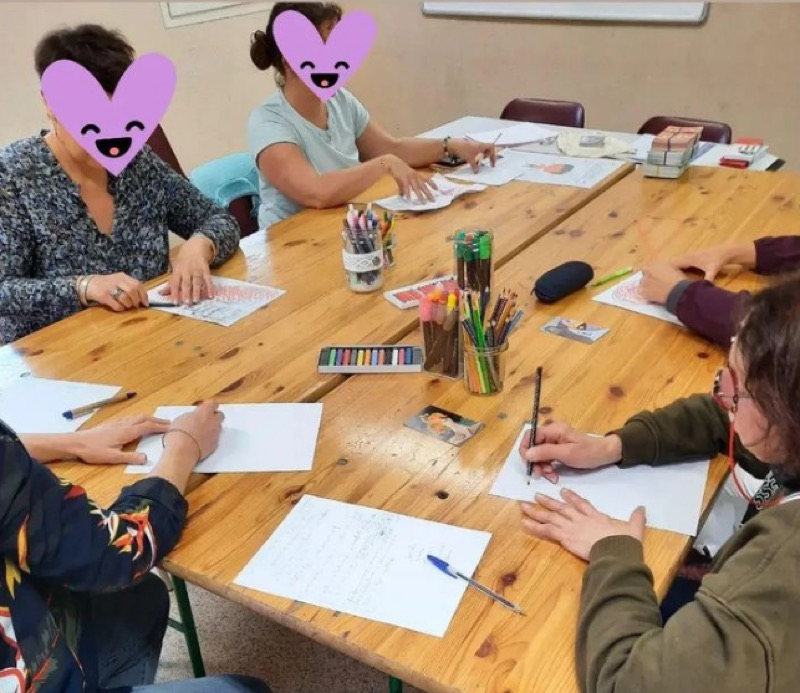
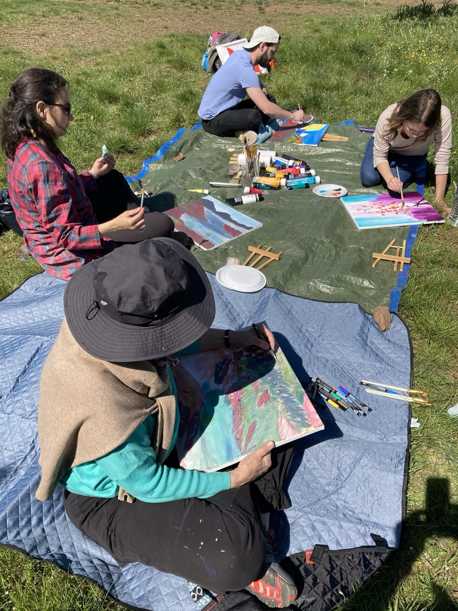

Explorer ses rêves
Les rêves font partie de notre vie psychique, mais nous savons rarement comment les accueillir, les observer ou les relier à ce que nous vivons. En présentiel & en visio.
Découvrir
Une première approche pour découvrir la fonction des rêves, améliorer leurs souvenirs, apprendre à les recueillir et connaître les premiers repères d'observation. Un temps d'échange est prévu en fin de rencontre. Aucune connaissance préalable n'est nécessaire.
Gratuit
1 h · petit groupe · visioJeudi 20 h – 21 h
Approfondir
Un travail progressif en petit groupe : approfondir les repères d'observation, repérer la place du corps, des émotions, de l'espace et des relations dans le rêve, s'approprier les outils proposés et explorer ce que la mise en commun permet. Chaque participant dispose d'outils pratiques.
90 € le cycle
3 rencontres de 1 h 30 · petit groupeMardi 19 h 45 – 21 h 15
Poursuivre
Un temps régulier pour déposer, écouter et approfondir ce que les rêves mettent en mouvement : partager un rêve si on le souhaite, affiner son observation, entendre différentes résonances et repérer des évolutions au fil du temps. Cadre clair, outils d'observation, circulation de parole structurée.
28 € la séance
1 h 30 · cercle mensuel1 mardi par mois, 19 h 45 – 21 h 15
« S'intéresser à ses rêves, c'est offrir la possibilité à votre inconscient de s'exprimer. »
Ateliers ponctuels
D'autres chemins d'exploration

Groupe d'échange et d'expression artistique
Les thèmes abordés : les émotions, la sensorialité, le burn-out, le couple, les relations aux autres… En petit groupe de 4 à 6 personnes, sous forme d'atelier d'arts plastiques : collage, peinture, dessin, écriture.
Prochaines dates à déterminer — me contacter pour être informé.
Venez créer votre génogramme
Nous pouvons souffrir dans notre présent d'un héritage transgénérationnel. Le génogramme est un outil permettant de mettre en lumière les liens relationnels, les répétitions, les enjeux et les symptômes dans une même famille — et de faire apparaître ce qui était jusqu'alors invisible.
30 € / personne · places limitées


Atelier peinture d'expression libre
Venez créer en expression libre votre toile personnalisée — car la création existe en chacun de nous, elle n'est pas réservée à l'artiste. L'acte créatif libère à la fois le corps et la parole. Il ne s'agit pas d'un cours de technique, mais d'un moment pour expérimenter la liberté de créer dans un cadre naturel et bienveillant, en extérieur, sur les berges du Salagou.
Chaque séance se termine par un tour de parole au cours duquel chacun est invité, s'il le souhaite, à dire quelques mots de son vécu. Le matériel — toile, pinceaux, chevalet, peinture — ainsi qu'un petit goûter sont prévus.
35 € / personne, tout compris · 6 participants maximum
Contactez-moi
Vous pouvez me contacter ou prendre rendez-vous de la manière qui vous convient le mieux.
ou par téléphone : 06 95 10 37 29